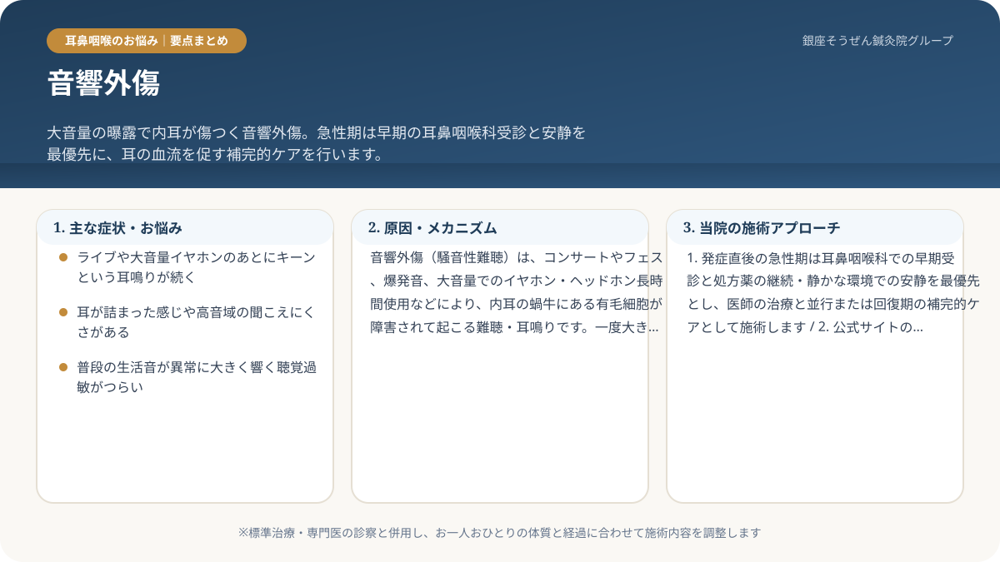

音響外傷の鍼灸
大音量の曝露で内耳が傷つく音響外傷。急性期は早期の耳鼻咽喉科受診と安静を最優先に、耳の血流を促す補完的ケアを行います。
まず知っておきたい要点と改善の流れ

音響外傷（騒音性難聴）は、コンサートやフェス、爆発音、大音量でのイヤホン・ヘッドホン長時間使用などにより、内耳の蝸牛にある有毛細胞が障害されて起こる難聴・耳鳴りです。一度大きく壊れた有毛細胞は再生しにくいため、発症直後は騒音から離れて耳を休め、速やかに耳鼻咽喉科を受診してステロイド・血流改善薬・ビタミンB12製剤などの早期治療を受けることが最優先となります。
このようなお悩みはありませんか？
- ✓ライブや大音量イヤホンのあとにキーンという耳鳴りが続く
- ✓耳が詰まった感じや高音域の聞こえにくさがある
- ✓普段の生活音が異常に大きく響く聴覚過敏がつらい
- ✓耳鼻科での治療後も夜間や就寝前の耳鳴りが気になる
当院の施術アプローチ・改善の流れ
なぜ鍼灸で改善へ向かうのか？（作用機序の図解）
音響外傷に対する鍼灸は、耳周囲・頸部の微小循環改善と聴覚・粘膜調整機序を通じて、お体本来の回復力を引き出します。

翳風・風池・合谷など、耳鼻咽喉領域の神経・血管と連動する経穴へ繊細にアプローチします。
首・顎まわりの深層筋緊張を緩め、内耳や粘膜周囲の滞った血流とリンパ循環を促します。
ストレスや睡眠不足で高ぶった交感神経を鎮め、音への過敏反応や粘膜の過剰反応を和らげます。
標準治療を妨げない設計で、生活支障度（THI等）の軽減と再発しにくい体調づくりを支えます。
院長YouTube解説・関連動画
騒音性難聴は非常に大きな音を聴いた後に起きる難聴
騒音性難聴は、非常に大きな音を聴いた後に起きる難聴のことです。大きな音を聞いたことが原因で、内耳の蝸牛の有毛細胞に障害が起きることによって難聴を引き起こします。音響外傷とも言います。
大きな音を聞いた後に耳鳴りがしたり、痛みを感じたりした場合は騒音性難聴である可能性が高いです。
コンサートやロックフェスなどが関係しています。他にも、ヘッドホンやイヤホンなどで長い時間大きな音量で音楽を聴くことなども関係しています。
騒音性難聴の原因は、大きな音を長い時間聞くこと
騒音性難聴の原因は、長い時間大きな音を聞くことです。特にイヤホンやヘッドホンを使って大音量で音楽を聴き続けていることが原因で騒音性難聴が起こることが多いです。他にもコンサートやフェスが原因で発症します。
他にも、仕事などで爆竹や花火などの爆発音を近くで聞くというような生活をしていることが原因となることもあります。
耳の奥には内耳という器官があり、内耳にはかたつむりのようにくだを巻いた蝸牛という器官があります。この管の中にリンパ液と有毛細胞があります。
音が伝わって鼓膜が振動し、振動がリンパ液に伝わると感覚毛を持つ有毛細胞が動いて電気信号になり、聴神経を通じて脳に伝わります。大音量や騒音によって有毛細胞が傷つくと脳にうまく音が送れなくなります。
イヤホンやヘッドホンだけではなく、コンサート会場で大音量で音楽を楽しんだり、花火の爆発音を聞いたり、工場の機械音を聞く環境で過ごしていたり、工事現場の大きな音に晒され続けたりすると騒音性難聴が発症しやすいです。
騒音性難聴の症状は、耳鳴りや聞こえの低下など
騒音性難聴の症状は、耳鳴りや聞こえの低下、耳の痛みやめまい、耳のつまり感です。症状は両耳に起こるとは限りません。ライブでスピーカーの側で音を聞いているととスピーカーに近い方だけ症状が出ることもあります。
初期症状は耳が塞がっているような耳塞感とキーンという耳鳴りです。場合によっては、耳の詰まり感だけが起こるということもあります。聞こえが悪くなったという自覚がなくても、右と左で聞こえ方が違ったり音が二重に聞こえたりする場合は騒音性難聴の可能性があります。
片方が悪くなるとそれを補うためなかなか気付きにくいです。高音から聞こえにくくなり、症状に気がつかないうちにどんどん進行し、だんだん低音も聞こえにくくなり最終的に会話にも支障が出ます。
時間がたつことでおさまってくることもありますが、耳鳴りや耳の聞こえの低下がずっと続きます。
大きい音を聞いた後に一時的に耳を休める方法もありますが、当院では基本的に早期発見早期改善をお勧めしています。
聴力低下:一時的な場合も長く続く場合もあります。特に高周波数の聴力が損なわれやすいです。
耳鳴り: 耳鳴りは音響外傷の典型的な症状で、耳の中や頭の中で鳴るような感覚。ピーピー、サイレン、ブザーなどの音として感じることが一般的です。
聴覚過敏: 通常の音が異常に大きく聞こえる状態で、通常の音量が不快または痛みを伴うように感じられます。
耳の圧迫感: 耳の中で圧迫感や満杯感を感じます。
平衡感覚の問題: 稀に、音響外傷が平衡感覚に影響を及ぼすことがあり、めまいやバランスの問題を引き起こすことがあります。
騒音性難聴の改善方法は、ステロイドや血液の循環をよくする血管拡張剤や血液凝固阻害剤です。神経を回復するビタミン剤も使います。
騒音性難聴は耳からくる耳鳴りに該当するため、傷ついた有毛細胞の回復、内耳の血流アップが改善のメインになります。
重症の場合は静かな環境で１週間入院する人もいます。1度傷ついた有毛細胞は再生しないため予防することが重要です。騒がしい環境で長時間過ごす人は耳栓がおすすめです。音を聞くときは周囲の騒音を消すノイズキャンセリング機能を持つイヤホンを選んで欲しいです。
Who世界保健機構では2019年、スマートフォンで大音量の音楽を聴くことが影響し、世界の若者２人に１人が騒音性難聴に苦しむリスクがあると発表しました。
大人の場合は走行中の電車の騒音レベルに当たる80dbの音を聞く機会を１週間に40時間以内に収めることが求められます。
1. 休息と静養
騒音から離れて静かな環境での休息が最も重要です。これにより耳が回復する可能性があります。
2. 聴力の評価
耳鼻咽喉科医による聴力損失の程度が評価されます。
3. ステロイド
急性期の音響外傷では、内服または局所的なステロイドが聴力回復を助ける可能性があります。
4. 聴覚補助装置
恒久的な聴力損失がある場合、補聴器の使用が検討されます。
5. 耳鳴りの管理
耳鳴りがある場合、リラクゼーション技法などの方法を行うこともあります。
6. 保護措置
今後の聴力損失を防ぐために、耳栓やイヤーマフなどの使用や騒音環境の管理が重要です。
7. カウンセリングとサポート
聴力損失に伴うストレスや不安に対処するための心理的サポートやカウンセリングが有効です。
1. ステロイド
名前: プレドニゾン、デキサメタゾンなど
説明: ステロイドは強力な抗炎症作用を持ち、音響外傷による内耳の炎症を減少させることができます。これにより、聴力の回復を助ける可能性があります。通常は短期間使用され、口から摂取するか、場合によっては局所的に投与されます。
2. 血流改善薬
名前: ペンタキシフィリン（トレンタール）など
説明: 内耳への血流を改善し、酸素と栄養素の供給を促進することで、耳の回復を助ける可能性があります。
3. 抗酸化剤
名前: ビタミンC、ビタミンE、グルタチオンなど
説明: 抗酸化剤は、音響外傷による酸化ストレスを軽減し、細胞損傷の修復を助ける可能性があります。
4. 耳鳴りの改善薬
名前: ガバペンチン（ノイロンチン）、アミトリプチリン（エラベル）など
説明: 耳鳴りの症状を管理するために、特定の種類の抗うつ薬や抗てんかん薬が使用されることがあります。
🎥 他のYouTube切り抜き・解説を読む（あと2件）▼
鍼灸によって音響外傷は改善するのか？
起きな音が原因で耳鳴り音の聞こえが悪くなる音響外傷を発症しました。翌日の朝に耳鼻科に行き薬をもらいました。その後、発症から３週間たち聞こえはほぼ元通りになりましたがかすかに耳鳴りがします。
日中は気にならないのですが、夜間（特に寝る時）には1番耳鳴りがうるさく感じてしまい、入眠に時間がかかり満足に寝れていません。鍼灸では音響外傷の施術はできますか？
十分に力になれます。
音響外傷はケースバイケースです。有毛細胞という音を認識する場所があります。これが壊れてしまった場合は回復が大変で、回復できない場合が多いです。
ただし、nさんは聴力が戻っているため神経が興奮しているだけの可能性があります。この場合は十分力になれます。薬は飲み続けて、下手なストレッチはしないでください。首や頬など耳鳴りのセルフケア程度のマッサージやストレッチはしても大丈夫です。
耳鳴りのセルフケアを試して効果があれば続けてほしいです。年齢を重ねると血流が悪くなって耳の中の細胞に栄養がなくなります。血液循環が悪くなり有毛細胞まで栄養が十分に送れていない状態になるのです。血流を上げて少しでも変わるのであればセルフケアや鍼灸を続けてほしいと思います。
Q未難聴ですが1年前から耳鳴りが鳴り止みません。１週間前から福岡の鍼灸院に通い始めましたが鍼灸はしない方が良いですか？
A施術を受けて耳鳴りが強くなる場合はすぐにやめた方が良いです。その場合はあっていないためお勧めはしません。楽になると感じる場合はあっているためお勧めします。
鍼灸師から見ると7年という年数はあまり関係ありません。年数では施術者の成長と有能さはわかりません。72年というのはブランドでブランドに甘えている鍼灸師の可能性もあります。鍼灸は鍼師のポテンシャルとモチベーション、知識がすごく出る施術です。ぜひ自分に合う鍼灸師を探してください。
騒音性難聴を防ぐためには大きい音を聞かないのが大前提です。
ヘッドホンやイヤホンは、直接耳に音が入ってくるため音の周波数が弱まることなく、高いまま耳に伝わり、内耳がダメージを受けることになります。長い時間や大音量での使用は避けることが大切です。ヘッドホンやイヤホンを使うときは、1時間聞いたらはずして少し耳を休ませることやつけたまま会話ができるくらいの音の大きさにしておくことをお勧めします。
そしてビタミンB12をとって神経の再生を促しましょう。有毛細胞は一旦壊れると再生しないと言われていますが、経験上人によって再生することもあります。有毛細胞が再生したのか耳の機能が戻ったのかの判断はしにくいですが、騒音性難聴で聴覚が戻らないと言われた人が改善するケースもあるため諦めないで欲しいです。
当院では鍼で耳の血流をどんどんアップさせて改善します。若ければ若いほどリカバリーは可能です。
メニエール病・難治性めまい・耳鳴りのツボ図解
実際の施術ではお一人おひとりの体質・症状に合わせて選穴しますが、メニエール病・前庭性片頭痛・耳鳴り・難治性めまいの内耳循環ケアの臨床でよく用いられる代表的なツボの目安です。

📌 代表的なツボの詳細一覧表を開く（6穴） ▼
| ツボ名 | 位置の目安 | 主な狙い | セルフケアの注意点 |
|---|---|---|---|
| 聴宮（ちょうきゅう） | 耳の穴の前、口を開けるとくぼむ場所 | 内耳周囲の微小循環改善・耳閉感や耳鳴りケア | 強く押さず口を少し開けて優しく触れます。 |
| 翳風（えいふう） | 耳たぶのすぐ後ろのくぼみ | 内耳・三叉神経・顔面周囲の血流とリンパ循環促進 | めまい発作直後は首を動かさず静かに温めます。 |
| 風池（ふうち） | 後頭部の生え際のくぼみ | 後頭下筋群の緊張緩和・椎骨動脈血流サポート | 親指で上向きに優しく支えるように押します。 |
| 完骨（かんこつ） | 耳の後ろの出っ張った骨の下後ろ | 平衡感覚の安定・睡眠の質改善 | 左右の張りを比べながら優しく緩めます。 |
| 内関（ないかん） | 手首の横ジワから指3本分肘寄りの中央 | めまいに伴う吐き気・自律神経発作の鎮静 | めまいが出そうなときのセルフ指圧にも有効です。 |
| 太衝（たいしょう） | 足の甲、親指と人差し指の骨の間 | ストレス性の内リンパ水腫悪化・イライラの緩和 | 深呼吸と合わせて3〜5秒ずつ押します。 |
国際査読論文の科学的エビデンス
国際的な医学データベース（PubMed・Cochrane等）で報告されているメニエール病・前庭性片頭痛・耳鳴り・難治性めまいの内耳循環ケア領域の代表的な査読済み鍼灸研究をまとめています（標準治療との併用や研究上の限界を含めて正確に掲載）。
📚 査読論文データ・PubMed出典リンクを開く（4件） ▼
| 年・研究デザイン | 対象・規模 | 主な結果 | 限界・出典 |
|---|---|---|---|
| 2013年 大規模多施設RCT | 季節性アレルギー性鼻炎 422名（ドイツ） | 7〜8週のRQLQ QOLがシャム比0.5点・薬単独比0.7点改善（P<0.001）、頓用薬使用も有意減少（P<0.001）。 | 1年目16週では群間差消失、臨床的意義は慎重評価。 Ann Intern Med (PMID: 23420231) |
| 2021年 メタ解析 | 耳鳴り 8 RCTs（n=504） | 生活支障度THI（MD -10.11, p<0.001）・TSI（MD -8.36, p<0.001）が有意改善。VASは有意差なし（p=0.06）。 | 組入れRCTの質・サンプル規模に限界あり。 Acupunct Med (PMID: 32772848) |
| 2026年 ネットワークメタ解析 | 突発性難聴 36研究（n=3,360・標準治療併用） | ステロイド等の標準治療への鍼灸併用で総有効率RR 1.19（p<0.0001）、3週間コースが推奨。 | エビデンス確実性は低く標準治療（早期ステロイド）併用が前提。 Complement Ther Med (PMID: 42918509) |
| 2023年 メタ解析 | 成人顎関節症 22 RCTs統合（n=471） | 標準治療併用で有効率RR 1.36・疼痛VAS MD -1.23と有意改善。 | GRADE確実性は低〜非常に低、さらなる高品質RCTが必要。 Medicine (PMID: 37746950) |
参考文献・出典
- 2013年 大規模多施設RCT（季節性アレルギー性鼻炎 422名（ドイツ））— Ann Intern Med (PMID: 23420231)
- 2021年 メタ解析（耳鳴り 8 RCTs（n=504））— Acupunct Med (PMID: 32772848)
- 2026年 ネットワークメタ解析（突発性難聴 36研究（n=3,360・標準治療併用））— Complement Ther Med (PMID: 42918509)
- 2023年 メタ解析（成人顎関節症 22 RCTs統合（n=471））— Medicine (PMID: 37746950)
よくある質問（FAQ）
Q. ライブ翌日から耳鳴りと詰まり感があります。耳鼻科と鍼灸のどちらを先に行くべきですか？▼
Q. 鍼灸を受けて耳鳴りが一時的に強く感じた場合はどうすればよいですか？▼
あわせて読まれる関連疾患（耳鼻咽喉のお悩み）
ある日突然片耳などが聞こえにくくなる感音難聴です。発症早期の耳鼻科ステロイド治療を最優先に、早期併用や回復期の耳鳴り・めまいをケアします。
実際には音がないのに耳の中で雑音が聞こえる状態です。耳の血流や自律神経・脳の過敏さを整えるケアで軽減を目指します。
高度難聴から年月を経て回転性めまいを繰り返す遅発性内リンパ水腫に対し、専門医管理下で安定期のめまい誘因ケアを行います。
日常の音が大きく響いたり不快に感じたりする聴覚過敏に対し、耳周囲の血流と自律神経を整える鍼灸でケアします。
中耳のアブミ骨が硬くなり音の振動が伝わりにくくなる病気です。耳鼻科での精査・手術適応の判断を最優先に、術前後の体調や耳鳴りを支えます。
加齢による内耳の変化で高音から聞こえにくくなる老人性難聴。耳鼻科での補聴器調整を基本に、耳周囲の血流と巡りを整えます。
CLINICAL RECOVERY CASES
✨ 実際の臨床改善事例・回復経過を見る
銀座本院をはじめ各院での実際の改善事例を症状別に絞り込んでご確認いただけます。
おひとりで悩まず、まずはご相談ください
銀座本院・川口・大宮・横浜・博多・田無の各院でご予約を承っております。